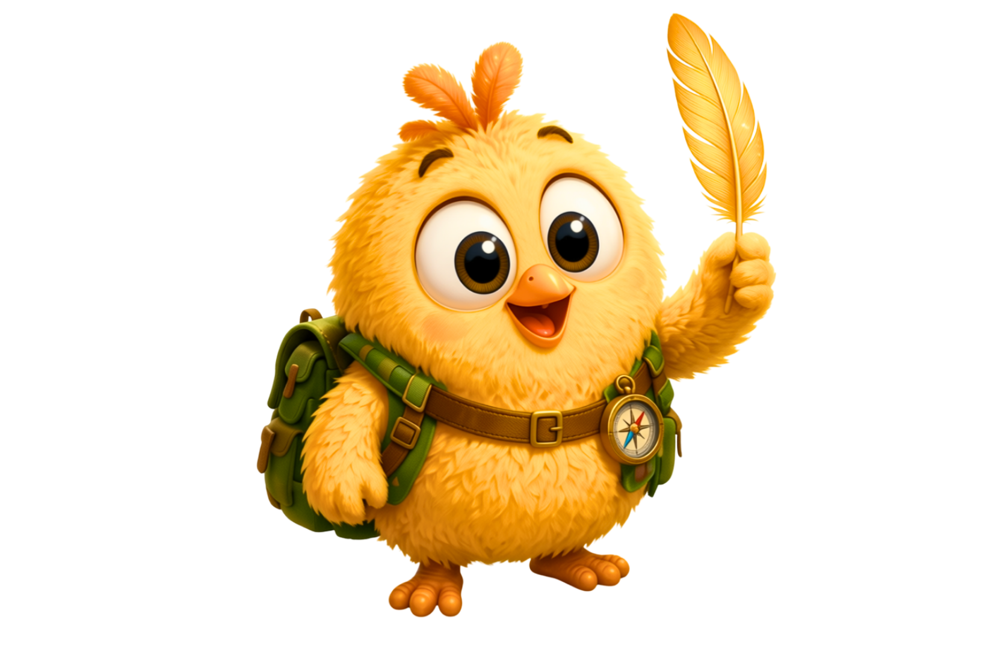

Explorer Backpack
For little surprises, maps, tools and adventure ideas.
Meet Morfu
Morfu is a small yellow chick with a big heart. He believes every adventure is better when children choose, search and explore with him.

Morfu is kind, curious and brave. He carries a little explorer backpack, follows tiny clues and asks young Explorers to help choose the right Animal Power. Morfu never becomes a different animal completely: he keeps his yellow colour, big eyes, tiny beak, three head feathers and familiar personality.
Morfu’s promise
In every story, Morfu asks young Explorers for help. Children choose, search, notice details and help Morfu take the next small brave step.
This makes every Morfu adventure feel warm, interactive and personal — perfect for reading together, building confidence and returning to the world of Morfu after the book.
Morfu’s explorer kit
For little surprises, maps, tools and adventure ideas.
To find the next path when the journey feels uncertain.
To spot tiny clues, animal tracks and hidden details along the way.
Every choice becomes part of Morfu’s story.
Start the story
Begin with Morfu and the Little Octopus, then explore free printable activities made for little hands.

Ready for the first adventure?
Open the book on Amazon, then come back for free activities and Explorer Club updates.
How Animal Powers work
When Morfu and the child understand what the adventure truly needs, they search for a Golden Feather. It lets Morfu borrow one gentle trait for a short time. The power helps, but it never solves everything on its own — Morfu still needs the child’s ideas, courage and careful eyes.
What does the new friend need?
The child helps reveal the magical key.
Only one Animal Power can be used at a time.
The power helps; friendship finishes the mission.
Morfu gains small fins and better movement and orientation underwater, while remaining clearly Morfu.